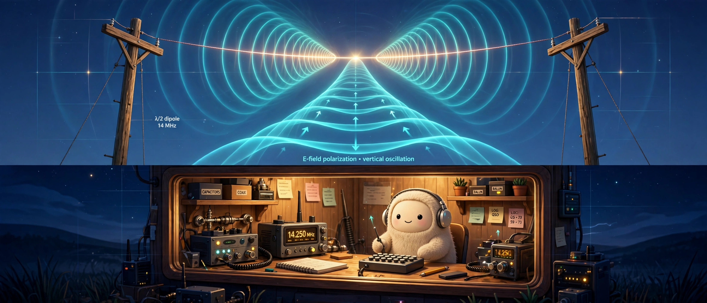

Resonant Dipoles, Yagi & Phased Arrays, 3D Polarization, 3-Polarizer Paradox, SWR Smith Chart & Ham Exam Guide
20m Dipole · 14.20 MHz

Half-Wave Dipole — How Oscillating RF Currents Detach EM Field Loops
Watch alternating current surge back and forth along a resonant λ/2 wire! Current peaks at the center feedpoint while voltage peaks at the tips — pinching off closed electric-field loops that fly outward at the speed of light.
Select any Ham band (160m → 70cm) to see exact resonant wire dimensions (468/f) and ground-bounce elevation lobes!λ = 21.1 m
How an Antenna Actually Detaches an Electromagnetic Wave Into Space
A stationary electric charge creates a static electric field. A steady DC current creates a steady magnetic field. Neither radiates energy away.
To launch a radio wave across the planet, you must accelerate charges — sloshing electrons back and forth millions of times per second inside a wire!
Because changes in the electric field travel at finite speed c ≈ 300,000,000 m/s, when the transmitter reverses polarity halfway through a cycle, the outer electric field lines haven't gotten the news yet! They bend back, touch, and pinch off into self-sustaining closed EM loops that fly away forever as coupled electric (E) and magnetic (H) fields.
Near Field vs. Far Field (Fraunhofer Zone):
• Reactive Near Field (r < λ/2π): Energy sloshes back & forth like a capacitor/inductor (falls as 1/r³).
• Radiating Far Field (r ≫ λ): Detached transverse EM waves (E ⊥ H ⊥ direction of travel),
amplitude falls as 1/r and power density falls as 1/r²!
Why a Half-Wave Dipole (L = λ/2) Resonates Like a Guitar String:
• Current I(z) MUST be zero at the open wire tips → MAXIMUM current at the center feedpoint!
• Voltage V(z) piles up at the open wire tips → MINIMUM voltage at the center feedpoint!
• Because Z = V/I, feedpoint impedance is low (~73 Ω pure resistance) while the tips are high-voltage!
Chapter 02 · Must-Know Ham Exam Formulas
Wavelength, `468 / f`, `234 / f` & End Effect
If you memorize just three numbers for the FCC Amateur Radio Technician and General exams, make them 300, 468, and 234!
1. Wavelength in Meters: λ (m) = 300 / f (MHz)
Example: 146 MHz (2m band) ⇒ 300 / 146 ≈ 2.05 meters!
Example: 14.2 MHz (20m) ⇒ 300 / 14.2 ≈ 21.1 meters!
2. Half-Wave Dipole Cut Length: L (ft) = 468 / f (MHz) (Each leg = 234 / f)
Why 468 instead of 492 (half of 984 ft)?
Because RF travels ~5% slower in real copper wire + stray capacitance at the tips ("End Effect")!
3. Quarter-Wave Vertical Whip: L (ft) = 234 / f (MHz) (or L in inches ≈ 2808 / f)
Example: 2m VHF 146 MHz quarter-wave whip = 234 / 146 = 1.60 ft ≈ 19.2 inches!
Dipoles vs. Verticals & How Height Above Ground Shapes Your Signal
Half-Wave Dipole (Broadside Figure-8)
Radiates strongest perpendicular (broadside) to the wire, with deep nulls straight off the ends!
Free-space impedance is ~73 Ω and gain is 2.15 dBi (0 dBd — the reference benchmark!).
Hang it low (0.20–0.25 λ high) and ground reflection shoots energy straight UP for regional NVIS.
Raise it to 0.50 λ or higher and ground interference drops the takeoff angle low (~15°–30°; 30° at exactly 0.50 λ) for long-haul DX!
Uses conductive ground radials as an electromagnetic mirror that creates the "missing" second quarter-wave image underground!
Radiates equally 360° around the horizon at a naturally low DX takeoff angle.
With flat horizontal radials, impedance is ~36 Ω; drooping the radials down at 45° raises the feedpoint to about 50 Ω — a fine practical match!
Antennas are passive — they never create new watts of power! Instead, a directional antenna acts like a flashlight reflector: squeezing energy away from unwanted directions and concentrating it into a tight beam (Gain).
How a Yagi–Uda Beam Works
Only ONE element (the Driven Element, ~λ/2) connects to your coax!
Behind it sits a Reflector (~5% longer → inductively detuned), whose reradiated wave cancels backward and adds forward.
In front sit one or more Directors (~5% shorter → capacitively detuned), guiding waves forward like optical lenses! More directors on a longer boom = tighter beam + higher gain!
Phased Arrays (Steering Without Motors!)
Drive N identical antennas with the same signal but progressive phase delays 0, Δφ, 2Δφ, ….
By constructive wave interference, the main beam swings toward the exact angle where k·d·sin(θ) + Δφ = 0!
Ham operators use 4-square phased vertical arrays on 40m/80m to switch directions across Europe, Asia, and South America in milliseconds!
The polarization of an EM wave is simply the direction its Electric Field (E) oscillates.
For a straight wire antenna, polarization matches the physical orientation of the wire!
Vertical Polarization: Standard for VHF/UHF FM repeaters & mobile/handheld radios (since a whip on a car roof or HT is naturally vertical and omnidirectional).
Horizontal Polarization: Standard for weak-signal VHF/UHF SSB & CW (rejects vertically polarized man-made electrical noise and lets stacks of horizontal Yagis shine).
Cross-Polarization Loss: Trying to receive a vertical local line-of-sight signal with a horizontal antenna loses ~20 dB (99% of your power!). (Note: after bouncing off the ionosphere on HF, Faraday rotation scrambles polarization anyway, so V/H matching matters most on local VHF/UHF!)
Circular Polarization (RHCP / LHCP): Combine a Horizontal and Vertical dipole fed 90° out of phase, and the E-field tip traces a 3D corkscrew! Essential for Amateur Satellites, ISS, & GPS because a spinning spacecraft never drops into a cross-pol null!
Chapter 06 · Tabletop Quantum Mechanics
Malus's Law, Crossed Polarizers & the 3-Polarizer Paradox
When linearly polarized light (or a radio wave passing through a parallel wire grid!) strikes a polarizer tilted by angle θ relative to its electric field, only the component along the polarizer's pass axis survives: E_out = E_in · cos(θ).
Since intensity is proportional to E², we get Malus's Law: I_out = I_in · cos²(θ).
The 3-Polarizer Paradox:
1. Polarizer #1 (0°) followed by Polarizer #3 (90°): cos²(90°) = 0% ⇒ PITCH BLACK!
2. Now slide Polarizer #2 (45°) IN BETWEEN them:
• Passing #1 → #2 rotates the surviving E-field to 45° with intensity cos²(45°) = 50%.
• Now that 45° wave hits #3 (90°), which is only 45° away! Another cos²(45°) = 50% survives!
• Total throughput jumps from 0% UP TO 25% of the polarized beam (12.5% of unpolarized light)!
Quantum Zeno Twist:
Place N intermediate polarizers stepped by Δθ = 90°/(N+1):
T(N) = [ cos²(90° / (N+1)) ]^(N+1) ───► 100% as N → ∞!
A polarizer isn't a passive sieve — it actively PROJECTS the photon/wave into a new polarization state!
Chapter 07 · Feedline Reflections & Matching
SWR, Reflected Power & Reading a Smith Chart
Just as light reflects when crossing between air and glass in LuxLab, an RF wave traveling down a 50 Ω coax cable reflects backward toward your transmitter whenever the antenna's feedpoint impedance Z_L = R + jX doesn't equal 50 Ω!
Crucial Exam Distinction: Putting an Antenna Tuner (ATU) at your radio transforms the impedance the transmitter sees to 50 Ω so your radio delivers full power safely — it does not change the SWR sitting on the coax between the tuner and the antenna! That's why low-loss feedline (LMR-400 or ladder line) matters when operating off-resonance!
Radio spans gigantic ratios — a 100-watt transmitter (`+50 dBm`) talking to a receiver sensitive to a quadrillionth of a watt (`−120 dBm`)!
Decibels turn ugly multiplication and division into simple addition and subtraction:
Power Ratio in dB: dB = 10 · log₁₀( P₂ / P₁ )
Mental-Math Golden Table (Memorize these 4 and you can solve EVERY Ham exam dB question!):
• +3 dB ≈ 2× power (−3 dB = ½ power)
• +6 dB ≈ 4× power (−6 dB = ¼ power, also = 1 S-unit on your receiver!)
• +10 dB = 10× power (−10 dB = 1/10 power)
• +20 dB = 100× power (e.g. 5 W → 500 W is +20 dB!)
Antenna Gain Scales:
• dBi = Gain compared to a theoretical Isotropic point radiator (sphere)
• dBd = Gain compared to a real Half-Wave Dipole
• Conversion (Exam Classic!): dBi = dBd + 2.15 (so a 0 dBd dipole = +2.15 dBi!)
Chapter 09 · Taking the Leap!
US Amateur Radio (Ham) License Roadmap: Technician → General → Extra
1. Technician Class (35 Questions · Pass: 26/35)
The entry license! Unlocks ALL VHF/UHF privileges (2m, 70cm, 6m repeaters, simplex, ISS space station, amateur satellites, digital DMR/APRS) PLUS 10m HF SSB voice (28.3–28.5 MHz, which goes worldwide during strong solar activity!) and CW on 80/40/15m.
Most people study 1–2 weeks using free question pools (HamStudy.org) and pass easily!
2. General Class (35 Questions · Pass: 26/35)
Unlocks the vast majority of HF Shortwave bands (160m, 80m, 40m, 20m, 17m, 15m, 12m, 10m) — worldwide ionospheric skywave voice, Morse (CW), and weak-signal digital (FT8)!
You can even take Technician & General in the same exam session for one fee!
3. Amateur Extra (50 Questions · Pass: 37/50)
Unlocks every last slice of every amateur band, deep RF circuit & Smith Chart engineering, and lets you serve as a Volunteer Examiner (VE) to license the next wave of Hams!
Chapter 10 · Quick Reference
Interactive Antenna, Polarization & Ham Glossary (26 Terms)